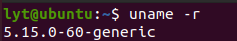
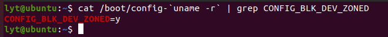
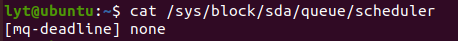
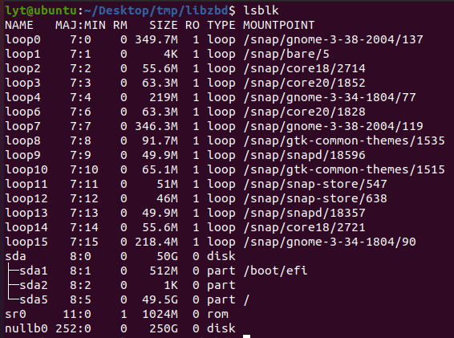
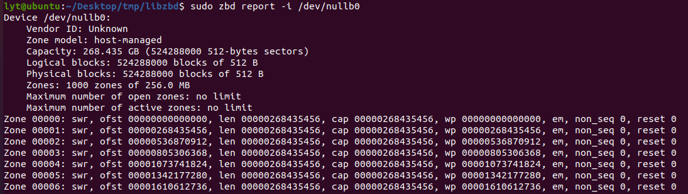
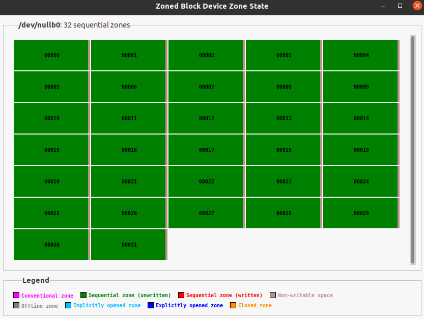
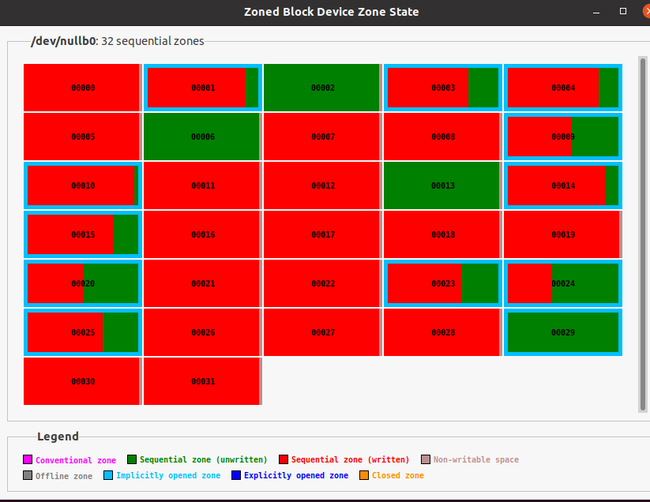
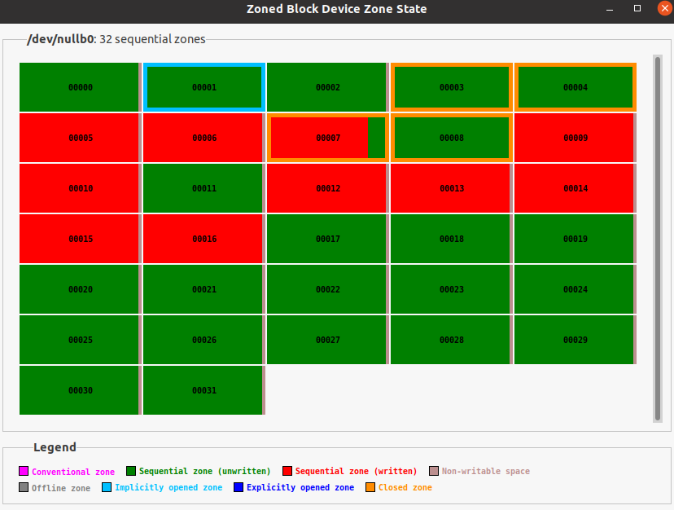
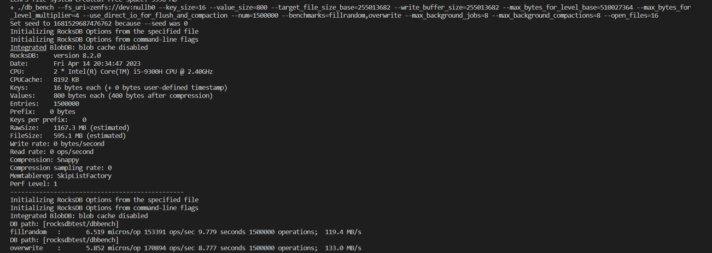

ZNS设备模拟
1.Setting-up a Zoned Storage Compatible Linux System
Overview
- A compatible Linux distribution with the right kernel version
- Support for zoned block devices
- Necessary system utilities
配置ZNS需要正确的内核版本以能够支持相应的版本，首先建立可以和zoned storage相兼容的linux system。
Linux Distribution
一些linux发行版本提供了zoned storage的支持，这些发行版本的常规安装提供了可以支持SMR硬盘和ZNS SSDs的支持。
这里采用Ubuntu 20.04跑在VMWare上的虚拟机作为安装的linux system。
当然也可以用其他的版本,下载的发行版本需要满足两个条件：
- The kernel version must be 4.10.0 or higher.
- The kernel configuration option CONFIG_BLK_DEV_ZONED must be enabled.
install Fedora can be found here.
1.测试内核版本：
uname -r

2.用以下两条命令来检测是否支持Zoned Block Device:
cat /boot/config-`uname -r` | grep CONFIG_BLK_DEV_ZONED
cat /lib/modules/`uname -r`/config | grep CONFIG_BLK_DEV_ZONED

3.检查系统配置
write ordering control
linux内核并不保证命令到达设备的顺序，这意味到达磁盘的写命令顺序可能会打乱，因此可能造成写错误。为了避免这个错误，"zone write lock mechanism" 用来顺序化这些操作。
查看block I/O调度器：
# cat /sys/block/sdb/queue/scheduler
[none] mq-deadline kyber bfq

如果不是mq-deadline的调度器，需要切换成mq-deadline的调度器：
# echo mq-deadline > /sys/block/sdb/queue/scheduler
# cat sys/block/sdb/queue/scheduler
[mq-deadline] kyber bfq none
System Utilities
按照说明里边我只找到了lsblk指令，其他的诸如没找到sg3_utils，lsscsi等。
不过在ubuntu里边可以用zbd这个指令来和blkzone起到类似的效果，这个命令是用来看zone的信息的。
安装libzbd的过程如下：
首先libzbd需要下面的package进行编译：
# 如果想要有图形化界面的gzbd和gzbd-viewer的话 还需要首先安装libgtk-3-dev这个包
# sudo apt install libgtk-3-dev
# apt-get install autoconf
# apt-get install autoconf-archive
# apt-get install automake
# apt-get install libtool
# apt-get install m4
同时系统需要有blkzoned.h，头文件在/usr/include/linux里边可以找一下：
sudo ls /usr/include/linux/ | grep blkzoned
然后把libzbd的包下下来，在已经下载的文件夹里面编译一遍：
git clone https://github.com/westerndigitalcorporation/libzbd.git
sh ./autogen.sh
./configure
make
默认下载在/usr.lib或者/usr/lib64下。
不过这个在Ubuntu22.04里边有个zbd-tools可以直接用apt下载。
2.Zoned Block Device模拟方法
最简单的方法是创建null block的方式来模拟block device
简单创建方法
创建一个null block块：
modprobe null_blk nr_devices=1 zoned=1
nr_devices=1表示仅创建一个设备；zoned=1表示创建的所有设备都是分区设备。
可以用lsblk来查看一下信息：

可以看到我们创建了一个nullb0的设备。
还可以用zbd来查看分区块设备的信息：

删除一个由modprobe创建（且不由configfs创建）的模拟设备可用以下方法删除：
rmmod null_blk
高级创建方法
# modprobe null_blk nr_devices=1 \
zoned=1 \
zone_nr_conv=4 \
zone_size=64 \
nr_devices=1表示仅创建一个设备；
zoned=1表示创建的所有设备都是分区设备；
zone_nr_conv=4表示传统的Zone个数为4；
zone_size=64表示每个Zone有64MB。
configfs接口为创建模拟分区块设备提供了强大的手段。configfs可供修改的参数如下：
# cat /sys/kernel/config/nullb/features
memory_backed,discard,bandwidth,cache,badblocks,zoned,zone_size,zone_capacity,zone_nr_conv,zone_max_open,zone_max_active,blocksize,max_sectors,virt_boundary
需要注意的是不同内核版本可修改的参数是不一样的：
| kernel | feature |
|---|---|
| 4.10.0 | zoned |
| 4.10.0 | chunk_sectors |
| 4.20.0 | nr_zones |
| 5.8.0 | zone_append_max_bytes |
| 5.9.0 | max_open_zones |
| 5.9.0 | max_active_zones |
configfs接口可以用来用脚本创建具有不同zone配置的模拟zone块设备。
创建内容如下的脚本：
#!/bin/bash
if [ $# != 4 ]; then
echo "Usage: $0 <sect size (B)> <zone size (MB)> <nr conv zones> <nr seq zones>"
exit 1
fi
scriptdir=$(cd $(dirname "$0") && pwd)
modprobe null_blk nr_devices=0 || return $?
function create_zoned_nullb()
{
local nid=0
local bs=$1
local zs=$2
local nr_conv=$3
local nr_seq=$4
cap=$(( zs * (nr_conv + nr_seq) ))
while [ 1 ]; do
if [ ! -b "/dev/nullb$nid" ]; then
break
fi
nid=$(( nid + 1 ))
done
dev="/sys/kernel/config/nullb/nullb$nid"
mkdir "$dev"
echo $bs > "$dev"/blocksize
echo 0 > "$dev"/completion_nsec
echo 0 > "$dev"/irqmode
echo 2 > "$dev"/queue_mode
echo 1024 > "$dev"/hw_queue_depth
echo 1 > "$dev"/memory_backed
echo 1 > "$dev"/zoned
echo $cap > "$dev"/size
echo $zs > "$dev"/zone_size
echo $nr_conv > "$dev"/zone_nr_conv
echo 1 > "$dev"/power
echo mq-deadline > /sys/block/nullb$nid/queue/scheduler
echo "$nid"
}
nulldev=$(create_zoned_nullb $1 $2 $3 $4)
echo "Created /dev/nullb$nulldev"
运行脚本，脚本的四个参数分别为：
- 模拟设备的扇区大小（bytes）
- 模拟设备的zone大小（MiB）
- 传统zone个数
- 有顺序写限制的zone个数
运行结果如下：
# ./nullblk-zoned.sh 4096 64 4 8
Created /dev/nullb0
# zbd report -i /dev/nullb0
Device /dev/nullb0:
Vendor ID: Unknown
Zone model: host-managed
Capacity: 0.805 GB (1572864 512-bytes sectors)
Logical blocks: 196608 blocks of 4096 B
Physical blocks: 196608 blocks of 4096 B
Zones: 12 zones of 64.0 MB
Maximum number of open zones: no limit
Maximum number of active zones: no limit
Zone 00000: cnv, ofst 00000000000000, len 00000067108864, cap 00000067108864
Zone 00001: cnv, ofst 00000067108864, len 00000067108864, cap 00000067108864
Zone 00002: cnv, ofst 00000134217728, len 00000067108864, cap 00000067108864
Zone 00003: cnv, ofst 00000201326592, len 00000067108864, cap 00000067108864
Zone 00004: swr, ofst 00000268435456, len 00000067108864, cap 00000067108864, wp 00000268435456, em, non_seq 0, reset 0
Zone 00005: swr, ofst 00000335544320, len 00000067108864, cap 00000067108864, wp 00000335544320, em, non_seq 0, reset 0
Zone 00006: swr, ofst 00000402653184, len 00000067108864, cap 00000067108864, wp 00000402653184, em, non_seq 0, reset 0
Zone 00007: swr, ofst 00000469762048, len 00000067108864, cap 00000067108864, wp 00000469762048, em, non_seq 0, reset 0
Zone 00008: swr, ofst 00000536870912, len 00000067108864, cap 00000067108864, wp 00000536870912, em, non_seq 0, reset 0
Zone 00009: swr, ofst 00000603979776, len 00000067108864, cap 00000067108864, wp 00000603979776, em, non_seq 0, reset 0
Zone 00010: swr, ofst 00000671088640, len 00000067108864, cap 00000067108864, wp 00000671088640, em, non_seq 0, reset 0
Zone 00011: swr, ofst 00000738197504, len 00000067108864, cap 00000067108864, wp 00000738197504, em, non_seq 0, reset 0
用脚本创建的分区块设备的删除也需要使用脚本：
#!/bin/bash
if [ $# != 1 ]; then
echo "Usage: $0 <nullb ID>"
exit 1
fi
nid=$1
if [ ! -b "/dev/nullb$nid" ]; then
echo "/dev/nullb$nid: No such device"
exit 1
fi
echo 0 > /sys/kernel/config/nullb/nullb$nid/power
rmdir /sys/kernel/config/nullb/nullb$nid
echo "Destroyed /dev/nullb$nid"
运行结果如下：
# ./nullblk-del.sh 0
Destroyed /dev/nullb0
3.在ZONED BLOCK DEVICE上模拟ZenFS
好了，现在我们可以来基于zbd建立zenfs的文件系统。
记得要把之前的libzbd安装了。
首先建立一个null_blk的zone device block，利用如下脚本：
#!/bin/bash
if [ $# != 7 ]; then
echo "Usage: $0 <sect size (B)> <zone size (MB)> <zone capacity (MB)> <nr conv zones> <nr seq zones> <max active zones> <max open zones>"
exit 1
fi
scriptdir="$(cd "$(dirname "$0")" && pwd)"
modprobe null_blk nr_devices=0 || return $?
function create_zoned_nullb()
{
local nid=0
local bs=$1
local zs=$2
local zc=$3
local nr_conv=$4
local nr_seq=$5
local max_active_zones=$6
local max_open_zones=$7
cap=$(( zs * (nr_conv + nr_seq) ))
while [ 1 ]; do
if [ ! -b "/dev/nullb$nid" ]; then
break
fi
nid=$(( nid + 1 ))
done
dev="/sys/kernel/config/nullb/nullb$nid"
mkdir "$dev"
echo $bs > "$dev"/blocksize
echo 0 > "$dev"/completion_nsec
echo 0 > "$dev"/irqmode
echo 2 > "$dev"/queue_mode
echo 1024 > "$dev"/hw_queue_depth
echo 1 > "$dev"/memory_backed
echo 1 > "$dev"/zoned
echo $cap > "$dev"/size
echo $zs > "$dev"/zone_size
echo $zc > "$dev"/zone_capacity
echo $nr_conv > "$dev"/zone_nr_conv
echo $max_active_zones > "$dev"/zone_max_active
echo $max_open_zones > "$dev"/zone_max_open
echo 1 > "$dev"/power
echo mq-deadline > /sys/block/nullb$nid/queue/scheduler
echo "$nid"
}
nulldev=$(create_zoned_nullb $1 $2 $3 $4 $5 $6 $7)
echo "Created /dev/nullb$nulldev"
然后设置对应的参数
chmod +x nullblk-zoned.sh
sudo ./nullblk-zoned.sh 512 128 124 0 32 12 12
这样一个zbd就在建立好了，可以用lsblk命令查看一下，现在应该有了一个叫做/dev/nullb0的设备，不过是空的，再用gzbd-viewer查看一下这个设备：

之后我们可以利用fio向里面写入数据，首先下载fio：
git clone https://github.com/axboe/fio.git
cd fio
./configure
make -j$(nproc --all)
sudo make install
再往里面写入数据：
sudo fio --name=test --filename=/dev/nullb0 --zonemode=zbd --direct=1 --runtime=5 --ioengine=io_uring --hipri --rw=randwrite --iodepth=1 --bs=16K --max_open_zones=12
可以用gzbd-viewer查看zbd的情况：

最后我们利用脚本在nullb0上创建一个zenfs文件系统：
#!/bin/sh -ex
DEV=nullb0
FUZZ=5
ZONE_SZ_SECS=$(cat /sys/class/block/$DEV/queue/chunk_sectors)
ZONE_CAP=$((ZONE_SZ_SECS * 512))
BASE_FZ=$(($ZONE_CAP * (100 - $FUZZ) / 100))
WB_SIZE=$(($BASE_FZ * 2))
TARGET_FZ_BASE=$WB_SIZE
TARGET_FILE_SIZE_MULTIPLIER=2
MAX_BYTES_FOR_LEVEL_BASE=$((2 * $TARGET_FZ_BASE))
MAX_BACKGROUND_JOBS=8
MAX_BACKGROUND_COMPACTIONS=8
OPEN_FILES=16
echo deadline > /sys/class/block/$DEV/queue/scheduler
./plugin/zenfs/util/zenfs mkfs --zbd=$DEV --aux_path=/tmp/zenfs_$DEV --finish_threshold=0 --force
./db_bench --fs_uri=zenfs://dev:$DEV --key_size=16 --value_size=800 --target_file_size_base=$TARGET_FZ_BASE \
--write_buffer_size=$WB_SIZE --max_bytes_for_level_base=$MAX_BYTES_FOR_LEVEL_BASE \
--max_bytes_for_level_multiplier=4 --use_direct_io_for_flush_and_compaction \
--num=1500000 --benchmarks=fillrandom,overwrite --max_background_jobs=$MAX_BACKGROUND_JOBS \
--max_background_compactions=$MAX_BACKGROUND_COMPACTIONS --open_files=$OPEN_FILES
用gzbd-viewer看一下写入数据：

在db_bench上进行测试：

在zenfs的tests目录中可以对文件系统进行测试。